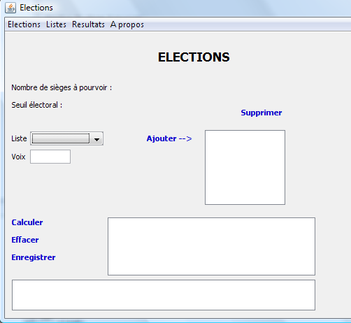
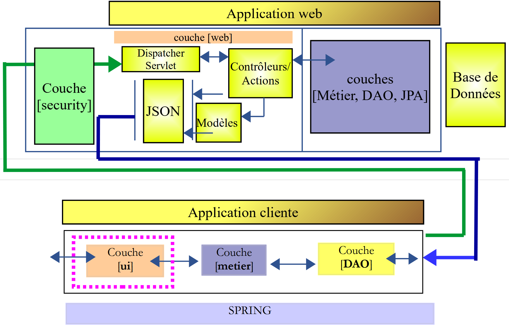
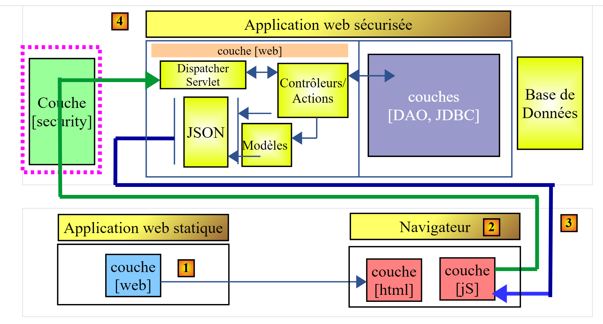
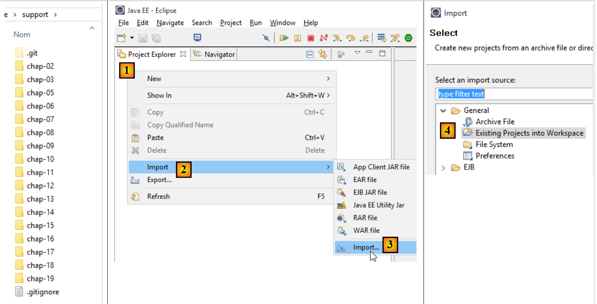

1. 简介
1.1. 背景
该文件的PDF版本可点击|此处|查看。
该文档中的示例可|在此处|查阅。
本文档兼具讲座和大学辅导课（TD）的功能，面向初学者。其参考资料如下：
参考文献：
我们将分别将这些资料称为[ref1]和[ref2]。 参考文献 [ref1] 虽已过时（2002年），但对于本文件而言已足够，因其仅用于阐述 Java 语言语法和基本操作。完成本作业所需的其余内容在本文件中以 [Course] 为题的各章节呈现。这些章节直接摘自 [ref2]（2015年），部分内容已进行简化。
本文件旨在从专业角度教授Java语言。因此，我们大量依赖Spring框架[http://spring.io/]，该框架在JEE（Java企业版）开发中被广泛使用。从逻辑上讲，本课程应由JEE课程接续。在Istia（昂热大学）便是如此。 目前（2015年11月），JEE是拥有硕士学位的年轻开发人员的主要就业来源。在JEE领域，除了Spring之外还有许多其他技术。Spring的优势在于易于理解，最重要的是，它提供了可在Spring生态系统之外复用的编码最佳实践。这正是本课程选择Spring的原因。
本实验课已使用超过10年，并随着技术的发展而不断演进。在IstiA，该课程之后紧接着开设JEE实验课[Java EE入门]。 后者始于2012年（现为2015年），亟待更新。该课程通过JSF2（Java Server Faces）Web框架和EJB3（Enterprise Java Bean）来介绍JEE标准。这两门教程相结合，已帮助众多学生在数字服务公司（ESN）获得JEE实习机会，并在实习结束后立即获得正式录用。
你不会在这份文档中找到对Java所有方面的正式讲解。多年来，初级开发人员解决问题的方式发生了显著变化。如今，他们几乎总是转向互联网寻找代码片段，并将这些片段组合起来形成一个程序。如果我们为他们提供一门课程，他们很少使用它，而更倾向于回到互联网上。虽然我最初对这种方法持怀疑态度，但结果还是让我感到惊讶。 那些基础薄弱的学生竟然能编写出可运行的程序，而如果没有互联网的帮助，他们很可能无法成功。如今，我已完全依赖这种教学方法。
代码片段无法全面展示解决方案的架构，而本文档的目标之一正是提供这样的概览。 学生将独立完成本教程作为实验练习，不设课堂讲授。课程安排中列出了各阶段的预期进度，学生可能快于或慢于该进度。他们的进度将通过一系列检查点进行验证，学生需向讲师展示这些检查点。讲师在场既是为了应要求提供解释，也是为了验证学生的工作成果。 每个人按自己的节奏进行。在分配给本次实验的36小时结束时，有些人完成的验证工作可能比其他人多出50%，但每个人——至少这是我们的目标——都将理解自己独立完成的工作。该实验无需教师指导即可完成。因此，它已发布在 [https://stahe.github.io]。
本文件不适合那些寻求Java学术课程的人——即那种以循序渐进、结构化方式讲解Java，并对语法每个细节都进行解释和论证的课程。相反，这里提出的是一个实验性的方法。学生可能无法理解文档中呈现的所有内容，但他们很可能能够善用其中的内容，而对细节的理解将随着经验的积累而自然形成。
本文同样不是算法课程。练习中的算法较为基础，任何刚接触算法课程的初学者都能解决。本文侧重于专业的 Java 开发环境及其丰富的库和框架，以及代码架构。我接触的大多数学生在算法方面存在薄弱环节，这一点后来也得到了他们实习导师的证实。因此，虽然精通算法很重要，但这并非本教程的重点。
最后，本文档（2015年12月版）未涵盖最新的Java特性，特别是流和lambda表达式。不过，它确实使用了一些最新JDK（JDK 1.8）的元素，后续代码必须使用该JDK进行编译。
1.2. 目录
第 2 章介绍了本教程的主题：计算选举结果。该问题非常直观。第 2 章要求您使用两种非常相似的语言——C# 和 Java——来实现解决方案。实现过程中不使用类。本章旨在介绍 Java 语法、其基本语句，以及用于构建 Java 项目的 Eclipse 集成开发环境（IDE）。
第 3 章要求您使用类在 Java 中实现该作业的解决方案。其目的是介绍类、继承、接口和泛型类的概念。同时还将介绍 JUnit 单元测试的概念。
第 4 章介绍了后续章节的基础概念：
- 分层架构；
- 基于接口的编程；
- 使用 Spring 实现前两个概念；

第 5 章通过四个项目介绍了 Spring 框架。
第 6 章介绍了 JDBC API，这是一个数据库访问接口。
第7章利用JDBC API和Spring，实现了课程项目的[DAO]（数据访问对象）层。

第 8 章实现了课程项目的 [业务] 层：

第 9 章使用控制台应用程序实现了 TD 的 [UI] 层：

第 10 章使用基于 Swing 组件库的图形化应用程序，实现了本教程的 [UI] 层：


第 11 章介绍了如何使用 [Spring Data] 框架（Spring 生态系统中的一个组件）进行数据库管理。本章介绍了 JPA（Java Persistence API）规范，该规范允许 [DAO] 层通过操作对象而非 SQL（结构化查询语言）来管理数据。分层架构的演变如下：

第 12 章应用第 11 章中的概念，通过使用 [Spring Data] 为本教程实现数据库访问功能。
第 13 章展示了如何使用 [Spring MVC]（Spring 生态系统的另一个分支）在 Web 上公开数据库。架构演变为客户端/服务器架构：

第14章和第15章将教程应用程序转换为客户端/服务器应用程序：

第 16 章介绍了如何使用 [Spring Security]（Spring 生态系统的另一个分支）来保障 Web 应用程序的访问安全。

第 17 章重新审视了本教程，并对选举 Web 服务进行了安全加固。
第 18 章探讨了跨域请求的问题：
 |
- 在[1]中，一个Web应用程序提供HTML/JavaScript页面；
- 在[2]中，浏览器执行嵌入在HTML页面中的JavaScript，以查询安全Web服务[3-4]；
设 D1 = http://machine1:port1 为服务器 [1] 的域名，D4 = http://machine4:port4 为服务器 [4] 的域名。 如果服务器 [1] 和 [4] 不处于同一域 [D1≠D4]，则从 [3] 到 [4] 的请求被称为跨域请求。由于浏览器实施的安全限制，配置这些请求可能会遇到问题。我们将探讨一种解决方案。
第 19 章通过选举应用程序实现了跨域请求。
1.3. 使用的工具
- Windows 10 Pro 64 位计算机；
- JDK 1.8（第22.1节）；
- Spring Tool Suite 3.6.3 IDE（第1节）；
- NetBeans 8.1（第22.4节）；
- Chrome 浏览器（未使用其他浏览器）；
- Chrome 扩展程序 [Advanced Rest Client]（第 1 节）；
- WampServer，其中包含 MySQL 数据库管理系统及其管理工具 [PhpMyAdmin]（第 22.7 节）；
务必使用 JDK 1.8。部分示例使用了该 JDK 中的组件。大多数示例是 Maven 项目，可使用以下任一 IDE 打开：Eclipse [https://www.eclipse.org/]、IntelliJ IDEA Community Edition [https://www.jetbrains.com/idea/download/] 以及 NetBeans [https://netbeans.org/]。 下文中的屏幕截图均来自 Spring Tool Suite IDE（Eclipse 的一个变体）。
1.4. 支持
本文档中的 Eclipse 项目可从 [https://stahe.github.io/zh-java-spring-dec-2015/] 获取。
 |
要导入某章的项目，请按照[1-8]中的说明在Eclipse中操作：
 |
大多数项目均为 Maven 项目。若加载后出现错误，请按 [Alt-F5] 并按照 [9-10] 中的步骤操作。所选的 Maven 项目将被重新构建。
 |